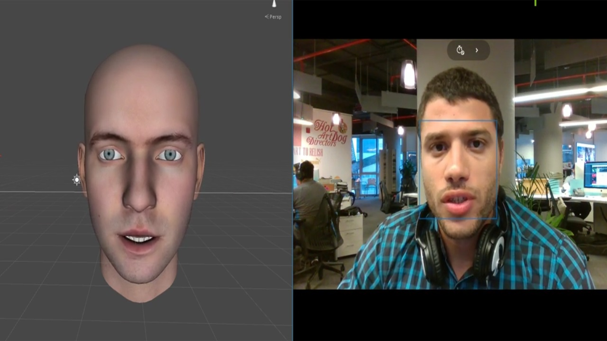
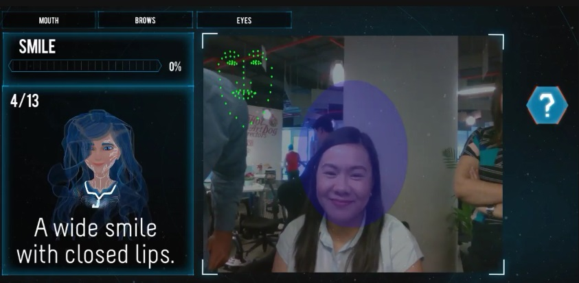

Face Tracking System
Real-time face tracking and expression mapping using Intel RealSense and Radial Basis Functions (RBF).
The Challenge
I developed this system while at Adabisc Future Qatar. The goal was to create a real-time face tracking solution using the Intel RealSense SR300 camera. I built a custom Unity plugin to interface with the RealSense SDK and implemented a machine learning pipeline to map face tracking points to character blend shapes.


Training Stage
I used Radial Basis Functions (RBF) for the mapping algorithm. The training process involves collecting face marker positions for various expressions. This calibration stage takes only 30-60 seconds, allowing for quick subject-specific tuning.
Real-time Performance
Once trained, the system performs real-time mapping of marker positions to blend shape weights, creating a responsive and convincing digital double.